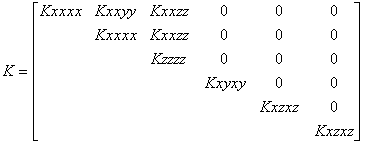

This model is mainly used for scientific use. Anisotropy from lamination, usually transverse anisotropy, can be best modeled with the specific “fracture anisotropy”, that also allows transverse isotropy.
In 3D, the most general expression of anisotropic linear elasticity writes:
s = Ke
where the rigidity matrix K is a full 6x6 symmetric matrix:
General anisotropy is hence described by 21 independent material parameters, that also include the orientation of the material’s principal axes of anisotropy towards the model axes, N,E,D. However, in most cases it will be impossible or impractical to derive 21 parameters from a lab test. Full orthogonal anisotropy has 9 material parameters (3 Young’s moduli, 3 Poisson’s ratios, 3 Shear moduli) and 3 direction parameters (and hence 9 dependent parameters). Transverse isotropic anisotropy, the most common encountered effect of lamination, only has 5 material parameters (two Young’s moduli, two Poisson’s ratio’s and one Shear Modulus) and 2 direction parameters (dip and azimuth of the plane of symmetry), hence having 14 dependent parameters.
Geomec has a specific transverse anisotropic model that allows the input of the two Young’s moduli, two Poisson’s ratio’s and one Shear Modulus and the dip and azimuth. Geomec computes the Rigidity matrix from this. This model also allows the implementation of anisotropy from fracture compressibility.
The most likely anisotropy is the case of laminated materials, for instance thin sand-shale layers, or preferential compaction, giving preferential orientation of clay particles.
The most likely case is the situation where the vertical (z) stiffness is different from the horizontal (t) stiffness. For laminated materials, the vertical stiffness is usually less than the horizontal stiffness (where the thin stiff layers will carry the horizontal load). For consolidated materials with high vertical stress, the opposite might occur, that the vertical stiffness is higher than the horizontal stiffness, since the initial vertical stress has been higher.
Stiffness parameters for simple anisotropy can be expressed in 2 Young’s moduli and 2 Poisson’s ratio’s. For x=East, y=North, z=Depth and t=North or East (or radial direction for triaxial cases), we can derive a stiffness matrix. We assume a vertical Young’s modulus (Ez), a vertical to horizontal Poisson’s ratio nz, a horizontal (transverse) modulus (Et) and a horizontal to horizontal Poisson’s ratio nt
e = C s = K-1 s
These are the stiffness relations that can be derived from one dimensional
loading in a triaxial apparatus:
Ez = Dsz
/ ez
(vertical loading at constant radial stress)
Et = (1-nt) Dst / et (radial loading at constant vertical stress) or
Et= 2 (1-nt) Dst / ev (ev being volume strain at radial loading)
The
Poisson’s ratio that governs the horizontal strain (at constant horizontal
stress) resulting from vertical stress changes is:
nz
= - et
Ez / Dsz
(vertical loading at constant radial stress)
The Poisson’s ratio nt is usually estimated in absence of true triaxial (or polyaxial) data.
The K (inverted C-matrix) for simple anisotropy has 6 different components only, which can be derived from the 4 stiffness parameters.

All other K-values are 0.